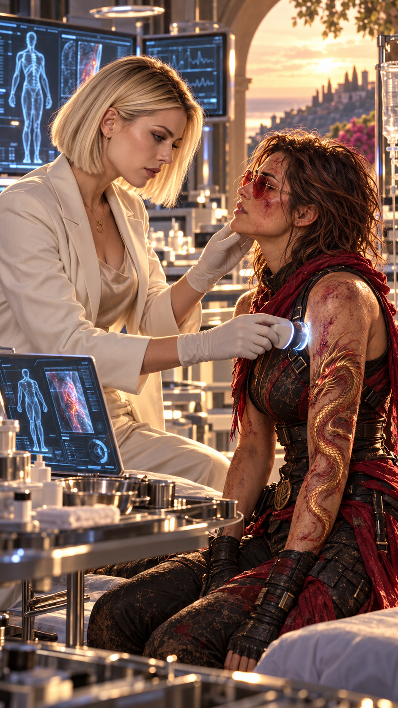
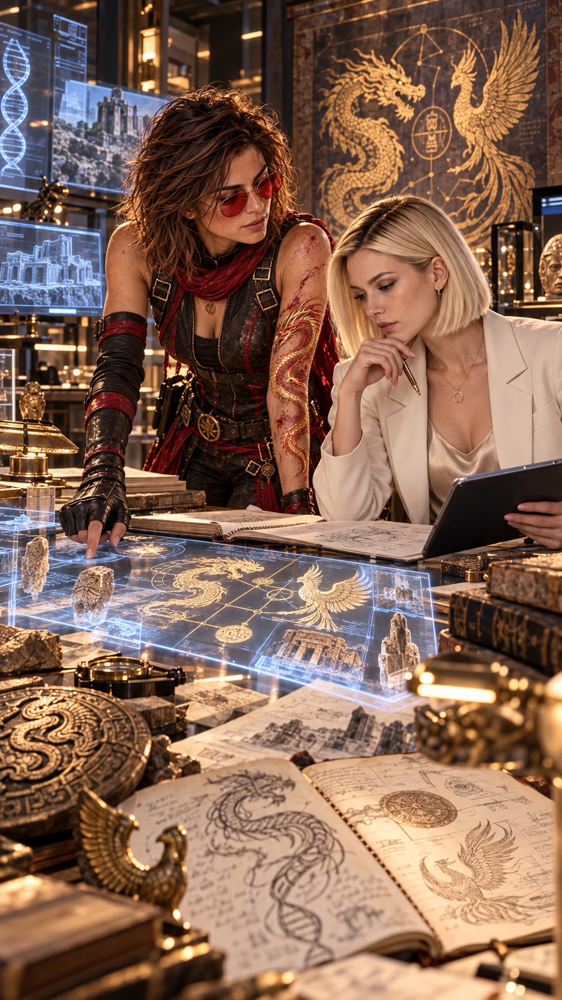
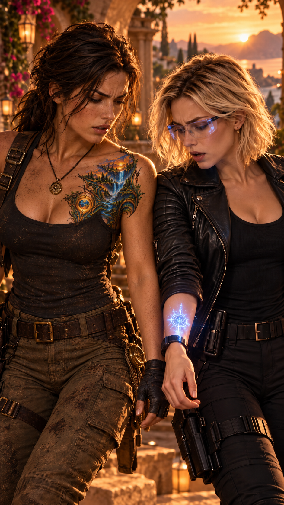
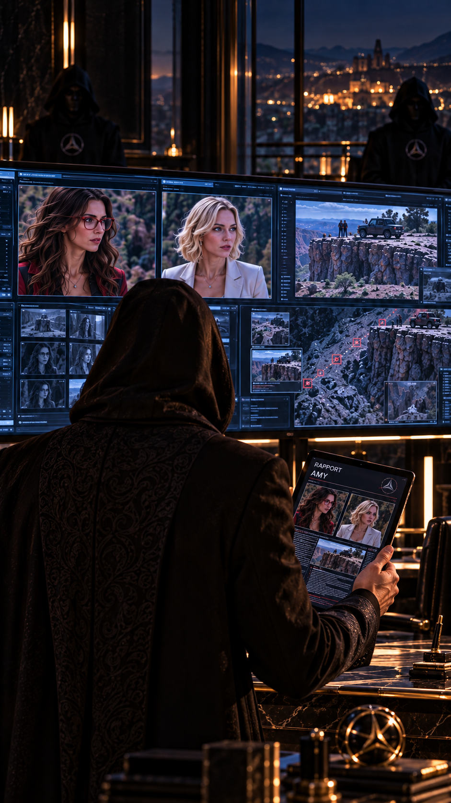
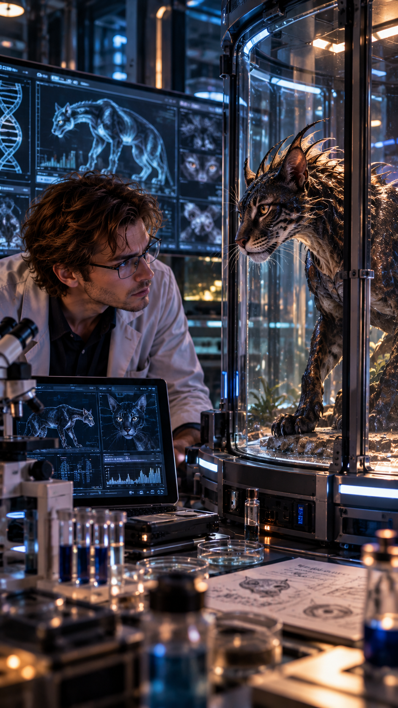
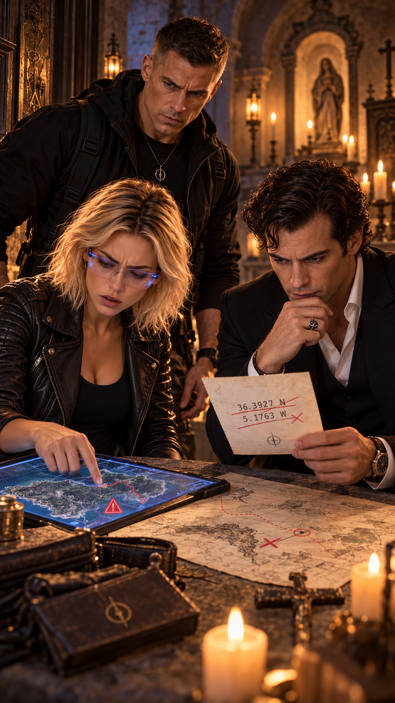
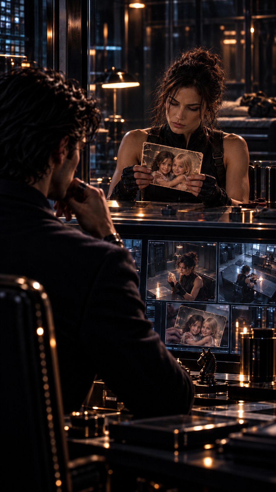

Hacienda Awake.
Anna entre dans la cuisine sans faire de bruit.
Betty est déjà là.
Debout devant le plan de travail.
Deux tasses.
Une assiette.
Et posé au centre, un petit morceau de gâteau au chocolat.
Anna s’arrête.
Betty ne se retourne pas.
— Je sais que tu n’as pas faim.
Anna regarde le gâteau.
— Alors pourquoi tu l’as fait ?
— Parce que chaque fois que tu dis que tu n’as pas faim, tu finis par voler la moitié de ce qu’il y a dans mon assiette.
Anna ne répond pas.
Betty tourne enfin légèrement la tête.
— Je me suis dit que cette fois, autant prévoir.
Anna hésite.
Puis s’approche.
— Je suis encore en colère.
— Je sais.
— Beaucoup.
— Je sais aussi.
Anna s’assoit.
Betty pousse doucement l’assiette vers elle.
— Ça ne change rien.
— Je ne cherche pas à acheter ton pardon avec du chocolat.
Anna coupe un morceau.
— Pourtant, la stratégie est bonne.
Betty sourit malgré elle.
Puis le silence revient.
Pas hostile.
Pas vraiment paisible non plus.
Quelque chose entre les deux.
Une blessure encore ouverte.
Mais un lien qui refuse de se rompre.
Anna finit par demander :
— Pourquoi tu ne m’as jamais rien dit ?
Betty ne cherche pas d’excuse.
— Parce que plus les années passaient, plus c’était difficile.
— Au début, je me disais que tu étais trop petite.
— Puis que tu étais trop jeune.
— Puis que je te le dirais quand tu serais prête.
Elle baisse les yeux.
— Et un jour, j’ai compris que ce n’était pas toi que j’attendais de voir prête.
Anna la regarde.
— C’était toi.
Betty acquiesce.
— Oui.
Un silence.
Anna prend un deuxième morceau de gâteau.
Betty le remarque.
— Tu vois.
Anna lève les yeux.
— Quoi ?
— Tu voles quand même dans mon assiette.
Anna baisse les yeux vers le gâteau.
— C’est mon assiette.
Betty sourit.
— C’est déjà un progrès.
Extérieur de l’Hacienda Awake.
Max attend Anna près d’un chemin qui longe le jardin.
Il tient un carnet.
Anna arrive.
— Tu m’as dit que tu voulais me montrer quelque chose.
— Oui.
Il lui tend le carnet.
— Première leçon.
— Déjà ?
— Tu veux devenir journaliste ou collectionner les belles citations ?
Anna prend le carnet.
— Les deux.
Max sourit.
— Très mauvaise réponse.
Ils commencent à marcher.
— Regarde autour de toi.
Anna tourne la tête.
— Quoi exactement ?
— Tout.
— Ça n’aide pas beaucoup.
— Justement.
Max s’arrête.
— Un bon journaliste ne regarde pas seulement ce qu’on lui montre.
— Il regarde ce qui ne colle pas.
Anna observe.
Le jardin.
Une employée.
Un véhicule.
Deux hommes qui discutent.
Une fenêtre ouverte.
Un drone qui passe.
— Et alors ?
— Dis-moi ce que tu vois.
Anna réfléchit.
— Une femme qui transporte du linge.
— Deux gardes qui parlent.
— Une voiture qui vient d’arriver.
— Rien d’exceptionnel.
Max sourit.
— Regarde mieux.
Anna recommence.
Puis elle fronce les sourcils.
— La femme au linge regarde vers le portail chaque fois qu’une voiture arrive.
— Bien.
— Le garde de gauche ne regarde jamais son collègue quand il parle.
— Très bien.
— La voiture est propre sauf les roues arrière.
Max la regarde.
— Et ?
— Donc elle a roulé sur un terrain humide récemment, alors qu’ici tout est sec.
Max sourit franchement.
— Là, tu commences à travailler.
Ils reprennent leur marche.
Anna regarde Max du coin de l’œil.
— Et Root ?
Max manque de trébucher.
— Quoi, Root ?
— Elle ne colle pas ?
— À quoi ?
— À ton observation.
Max la regarde.
Anna sourit.
— Tu la regardes beaucoup.
— Je regarde tout le monde.
— Non.
Max se tait.
Anna poursuit :
— Root, tu la regardes différemment.
— Tu inventes.
— Je suis en formation.
— Mauvaise élève.
— Excellent professeur.
Max soupire.
Puis regarde droit devant lui.
— Elle est fascinante.
Anna sourit.
— Ah.
— Ne fais pas ce bruit.
— Quel bruit ?
— Celui qui signifie que tu vas m’embêter pendant des semaines.
— Trop tard.
Max secoue la tête.
Puis ajoute plus sérieusement :
— Elle est brillante.
— Courageuse.
— Et complètement incapable de rester loin du danger.
Anna acquiesce.
— Ça ressemble beaucoup à quelqu’un d’autre que je connais.
Max la regarde.
— Qui ?
Anna sourit.
— Toi.
Cette fois, il rit.
Puis :
— Ne répète rien.
— Je suis journaliste.
— Précisément pour ça.

Laboratoire de l’Hacienda Awake.
Hope est assise sur une table d’examen.
Betty lui fixe un capteur au doigt.
— Tu peux arrêter de me regarder comme ça.
Hope hausse un sourcil.
— Comme quoi ?
— Comme si j’allais te découper en morceaux.
— Tu es généticienne.
— Ce n’est pas ce qu’on fait.
— C’est exactement ce que dirait quelqu’un qui veut me découper en morceaux.
Betty lève les yeux au ciel.
Puis prélève un peu de sang.
Hope observe le tube.
— Je veux tout vérifier.
— Je sais.
— Régénération.
— Réponse inflammatoire.
— Mutation éventuelle.
— Marqueurs inconnus.
— Tout.
Betty acquiesce.
— Et surtout comparer avant et après la grotte.
Hope la regarde.
— Tu as des échantillons d’avant ?
Betty hésite.
— Charles en a.
Hope ferme les yeux.
— Bien sûr.
— Tu n’as même pas l’air surprise.
— Plus rien ne m’étonne avec lui.
Betty sourit.
Puis Hope devient sérieuse.
— Et si quelque chose a changé ?
Betty prend le tube.
— Alors on essaiera de comprendre quoi.
— Et pourquoi.
Hope descend de la table.
— Ça me va.

Betty range le prélèvement.
Hope regarde les écrans.
— Tu crois qu’on peut étudier les fresques scientifiquement ?
Betty se tourne vers elle.
— Les fresques ?
— Pas seulement les dessins.
— Les idées.
— Les phrases.
— Les correspondances.
— Les symboles.
Betty réfléchit.
Hope poursuit :
— Si les Anciens ont vraiment laissé un savoir, il peut être philosophique.
— Symbolique.
— Ou scientifique.
— Peut-être les trois.
Betty acquiesce lentement.
— On pourrait créer une base.
— Chaque symbole.
— Chaque phrase.
— Chaque réaction de tes marques.
— Chaque endroit où elles apparaissent.
Hope sourit.
— Voilà.
— Et on compare ça à ce qu’on connaît.
— Mythologies.
— Biologie.
— Physique.
— Astronomie.
— Histoire.
Betty ajoute :
— Anthropologie.
— Archéologie.
— Linguistique.
Hope la regarde.
— Root va devenir folle.
— De bonheur ?
— Probablement.
Betty sourit.
Puis elle ajoute :
— Tu sais…
— Quoi ?
— Je comprends mieux pourquoi tu as été choisie.
Hope fronce légèrement les sourcils.
— Choisie pour quoi ?
Betty montre ses marques.
— Tu ne te contentes pas de croire.
— Tu veux comprendre.
Hope répond calmement :
— Croire sans comprendre peut rendre aveugle.
Betty sourit.
— Et comprendre sans croire peut parfois rendre arrogant.
Hope la regarde.
— Tu apprends vite.
— J’ai une bonne prof.
Un silence léger.
Quelque chose vient de changer entre elles.
Pas une amitié encore.
Mais le début d’une vraie alliance.
Hacienda Flores.
Lucy observe Isabel sur un écran.
Clive arrive derrière elle.
— Elle a transmis quelque chose ?
— Pas encore.
— Tu es déçue.
— Je suis concentrée.
— C’est ce que disent les gens déçus.
Lucy se retourne.
— Tu veux vraiment qu’on parle de ta capacité à te concentrer ?
Clive sourit.
— Ça dépend.
— Tu pensais à quoi ?
Lucy le regarde une seconde de trop.
Clive le remarque.
— Intéressant.
— Quoi ?
— Rien.
Il s’approche de l’écran.
Hale entre.
— Le faux planning est parti.
Lucy acquiesce.
— Elle l’a reçu ?
— Oui.
— Réaction ?
Hale secoue la tête.
— Rien.
Clive sourit.
— Parfait.
Hale le regarde.
— Pourquoi parfait ?
— Parce qu’une mauvaise taupe aurait réagi.
— Une bonne continue à vivre normalement.
Lucy acquiesce.
— Donc on attend.
Clive répond :
— Oui.
Puis :
— Et on s’ennuie.
Lucy le regarde.
— Tu peux partir.
— Impossible.
— Pourquoi ?
Clive se penche légèrement vers elle.
— Je commence à m’attacher à l’ambiance.
Lucy se détourne.
— Grave erreur.
— Peut-être.

Une porte s’ouvre.
Root entre.
— Vous avancez ?
Lucy se tourne vers elle.
— Lentement.
Root s’approche de l’écran.
Son bras effleure celui de Lucy.
Instantanément, Lucy ressent une légère chaleur au niveau de sa marque.
Elle se fige.
Root aussi.
Clive le voit.
— Ça va ?
Lucy retire son bras.
— Très bien.
Root la regarde.
— Tu as senti ?
Lucy répond trop vite.
— Non.
Clive hausse un sourcil.
— Très convaincant.
Lucy le fusille du regard.
Root sourit légèrement.
— On en reparlera.
— Non.
— Si.
— Non.
Clive croise les bras.
— J’aimerais beaucoup être présent.
Lucy répond :
— Certainement pas.
Root éclate de rire.
Clive sourit aussi.
Puis Lucy se tourne vers l’écran pour cacher le trouble qui vient de la traverser.
Clive la regarde encore quelques secondes.
Quelque chose dans son expression change.
À peine.
Mais suffisamment pour que Root le remarque.
Elle ne dit rien.

Hacienda de la Sierra — Hidalgo.
Le Maître Noir tient entre ses doigts le rapport d’Amy.
Il le relit une nouvelle fois.
Son lieutenant attend.
— Elle avait l’occasion.
— Oui.
— Et Hope est toujours vivante.
— Oui.
Silence.
Le Maître Noir pose le dossier.
— Amy ne rate pas.
— Non.
— Jamais.
— Presque jamais.
Le Maître Noir tourne lentement la tête.
Le lieutenant corrige :
— Jamais quand elle décide réellement de tuer quelqu’un.
Le Maître Noir sourit à peine.
— Voilà.
Il s’approche d’une fenêtre étroite donnant sur les montagnes.
— Elle hésite.
— Vous voulez que je la fasse revenir ?
— Non.
— Alors ?
Le Maître Noir garde le silence.
Puis :
— Elle est différente des autres.
Le lieutenant ne répond pas.
— Elle l’a toujours été.
— Plus intelligente.
— Plus instinctive.
— Plus difficile à prévoir.
— C’est pour cela que je l’ai toujours laissée respirer davantage.
Le lieutenant ose :
— Vous tenez à elle.
Le Maître Noir tourne lentement la tête.
Le silence devient lourd.
Puis il répond :
— Je tiens à ce qu’elle reste utile.
Le lieutenant comprend qu’il ne doit pas insister.
Mais la réponse est trop rapide.
Et tous deux le savent.
Un message apparaît.
Isabel a reçu la fausse information concernant Anna.
Le Maître Noir lit.
Puis sourit.
— Ils veulent nous faire bouger.
— Nous envoyons une équipe ?
— Oui.
Le lieutenant semble surpris.
— Vous aviez dit que c’était probablement un piège.
— Ça l’est.
— Alors pourquoi ?
Le Maître Noir se tourne vers lui.
— Parce qu’un piège est parfois plus utile à celui qui le voit qu’à celui qui le tend.
Il désigne plusieurs noms sur l’écran.
Hale.
Lucy.
Clive.
— Je veux savoir lequel des trois dirige réellement l’opération.
— Et Anna ?
— Personne ne la touche.
— Amy ?
Le Maître Noir hésite.
Cette fois plus longtemps.
— Laissez-la récupérer.
Puis :
— Et surveillez-la.
— Discrètement ?
Le Maître Noir sourit froidement.
— Très.

Laboratoire de Peter — Hacienda Awake.
Peter regarde un petit module transparent.
À l’intérieur, quelque chose bouge.
Une forme minuscule.
Élégante.
Végétale et animale à la fois.
Peter ajuste un paramètre.
— Encore un peu.
Le Phénix, perché derrière lui, pousse un léger cri.
Peter se retourne.
— Ne me juge pas.
L’oiseau incline la tête.
— Je sais ce que je fais.
Le Phénix pousse un second cri.
Peter soupire.
— D’accord, la dernière fois aussi j’ai dit ça.
Il se penche de nouveau vers le module.
À l’intérieur, une petite créature s’approche de la paroi.
Sa peau change subtilement de teinte.
Puis une fleur minuscule s’ouvre le long de son dos.
Peter sourit.
— Voilà.
Il regarde une photo de Betty affichée sur son écran.
— Si ça ne marche pas, je suis définitivement condamné.
Le Phénix pousse un troisième cri.
Peter le regarde.
— Merci pour le soutien.
Hacienda Awake — Terrasse.
Le soir tombe.
Anna est assise seule.
Betty apparaît à quelques mètres.
Elle hésite.
Puis fait demi-tour.
— Maman.
Betty s’arrête.
Anna ne la regarde pas.
— Tu peux rester.
Betty ne répond pas.
Elle revient.
S’assoit à côté d’elle.
Pas trop près.
Pas trop loin.
Quelques minutes passent.
Anna finit par murmurer :
— Je ne suis pas prête à te pardonner.
Betty acquiesce.
— Je sais.
— Mais je n’ai pas envie non plus que tu disparaisses.
Betty baisse les yeux.
— Je suis là.
Anna regarde l’horizon.
Puis, sans réfléchir, elle pose sa tête contre l’épaule de sa mère.
Une seconde.
Peut-être deux.
Puis elle se redresse.
Comme si elle venait de se surprendre elle-même.
Betty ne dit rien.
Elle ne sourit même pas.
Parce qu’elle sait que le moindre geste pourrait briser ce moment.
Anna murmure :
— Je suis toujours en colère.
— Tu me l’as déjà dit.
— Je préfère vérifier.
Betty sourit enfin.
Hacienda Flores.
Minuit.
Isabel quitte son bureau.
Hale la suit sur les caméras.
Lucy observe les flux réseau.
Clive attend près de l’ancien oratoire.
Isabel traverse le jardin.
Elle ralentit.
Entre dans l’oratoire.
Puis ressort moins d’une minute plus tard.
Clive murmure :
— Elle a déposé quelque chose.
Lucy répond dans son oreillette :
— Attends.
— Combien ?
— Jusqu’à ce qu’elle soit assez loin.
Clive patiente.
Puis entre.
La cache est ouverte.
Cette fois, elle contient un minuscule rouleau de matériau noir.
Clive ne le touche pas.
— J’ai quelque chose.
Lucy demande :
— Numérique ?
— Non.
— Papier ?
— Non plus.
— Alors quoi ?
Clive l’observe.
— Ça ressemble à quelque chose de très ancien fabriqué avec quelque chose de très moderne.
Lucy sourit légèrement.
— C’est exactement le genre de phrase que je déteste.

Clive approche un scanner miniature.
Des symboles apparaissent.
Puis une série de coordonnées.
Lucy les reçoit.
Hale regarde.
— Où ça mène ?
IA2 calcule.
Puis affiche une zone.
Lucy fronce les sourcils.
— Pas au laboratoire de Peter.
Clive sourit.
— Donc ils n’ont pas mordu comme prévu.
Hale comprend.
— Ils nous donnent volontairement une autre piste.
Lucy acquiesce.
— Ils savent.
Silence.
Clive regarde les coordonnées.
— Alors maintenant, la question devient intéressante.
Lucy se tourne vers lui.
— Laquelle ?
Clive sourit.
— Est-ce qu’on suit leur faux mouvement…
en sachant qu’ils savent qu’on sait ?
Hale soupire.
— Je déteste déjà ce jeu.
Lucy regarde les coordonnées.
— On y va.
Clive sourit.
— Évidemment.

Hacienda de la Sierra — Hidalgo.
Le Maître Noir reçoit une confirmation.
— Ils ont pris l’appât.
Son lieutenant sourit.
— Vous aviez raison.
Le Maître Noir ne répond pas.
Il regarde un autre écran.
Amy.
Amy est assise seule dans une chambre.
Elle tient quelque chose entre ses mains.
Une vieille photographie.
Deux enfants.
Hope.
Et elle.
Le Maître Noir reste immobile.
Le lieutenant demande :
— Un problème ?
Il éteint l’écran.
— Non.
Puis, après un silence :
— Pas encore.
Il se lève.
— Préparez l’étape suivante.
— Et Amy ?
Cette fois, sa voix devient plus froide.
— Si elle choisit de me désobéir encore…
Il s’interrompt.
Longtemps.
— Nous verrons jusqu’où va sa loyauté.
Le lieutenant s’incline.
Le Maître Noir reste seul.
Il regarde l’écran noir.
Et pour la première fois depuis longtemps, quelque chose lui échappe.
Ce n’est pas Anna.
Ce n’est pas Hale.
Ce n’est pas Maître Lee.
C’est Amy.
Et il déteste ça.
Certains liens se construisent.
D’autres se réparent.
Certains apparaissent sans qu’on sache encore pourquoi.
Et certains deviennent dangereux précisément parce qu’ils refusent de disparaître.
Les liens invisibles.